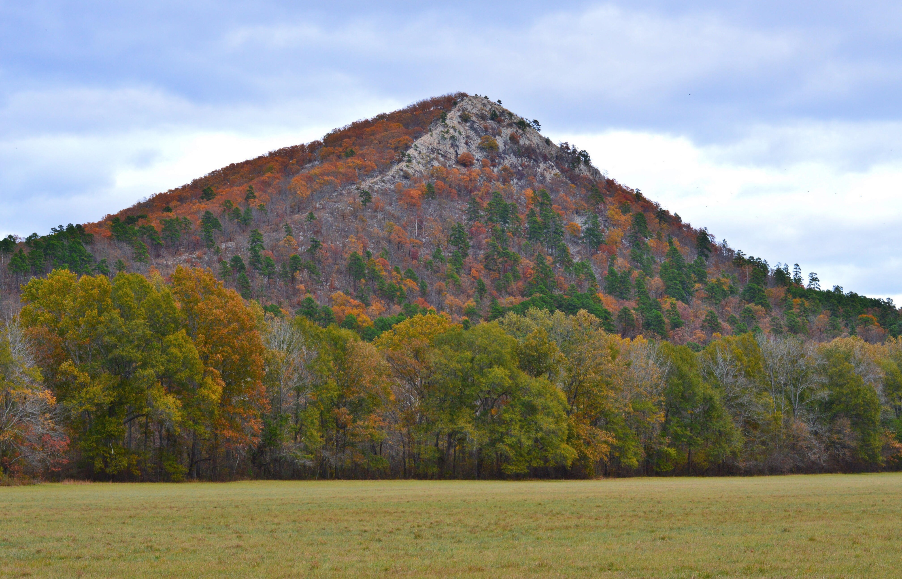

Pinnacle Mountain State Park
Park Information
Just west of Arkansas's capital city of Little Rock, Pinnacle Mountain stands as the centerpiece of this geographically diverse state park. his day-use park offers a variety of outdoor adventures on the Big and Little Maumelle Rivers, in the Arkansas Arboretum, and along over 22 miles of trails including over 14 miles of challenging mountain bike trails. Hike to the top, explore the rivers or take in one of the many interpretive programs offered by park staff. Visit the park visitor center, enjoy a picnic, or reserve a pavilion for a larger gathering. Loblolly Outpost will be located at the Pinnacle Mountain State Park visitor center. Be sure to stop by!
Pinnacle Mountain State Park is also certified as a Trails of Tears National Historic Site. The mountain witnessed the hardships faced by the removal parties of the Cherokees, as well as, Choctaws, Creeks, Seminoles, and Chickasaws. Learn more about the Trail of Tears in Arkansas state parks.
- 9600 Highway 300
- Roland, AR 72135
- 501-868-5806